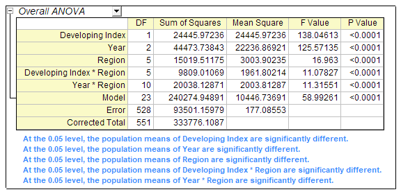

Dreifache ANOVA
ThreeWay-ANOVA
Zusammenfassung
Die dreifache ANOVA testet auf Haupteffekte und Wechselwirkungseffekte zwischen allen Kombinationen der drei Faktoren auf eine abhängige Variable.
Origin-Version mind. erforderlich: 2016 SR0
Was Sie lernen werden
- Eine dreifache ANOVA für praktische Daten mit Origin ausführen
- Die erzeugten Ergebnisse interpretieren
Anwenderbericht
Es stehen Ihnen einige öffentliche Daten der Weltbank zur Verfügung. Drei Faktoren werden einbezogen: Region(Asien/Europa/Afrika etc.), Entwicklungsindex (Entwicklungs-/Entwickelte Länder) und Jahr (2000/2005/2010). Sie möchten verstehen, wie diese drei Faktoren die Anzahl der Internetnutzer beeinflusst und ob es signifikante Unterschiede zwischen den Gruppen gibt.
Dreifache ANOVA durchführen
- Wählen Sie im Menü Hilfe: Lernzentrum, um den Dialog Lernzentrum zu öffnen. Wählen Sie Analysebeispiel auf der linken Seite und dann Statistik - ANOVA in der Auswahlliste Beispiele in auf der rechten Seite.
- Klicken Sie doppelt auf das dritte Element im Listenfeld, um den Ordner Three Way ANOVA(Pro) zu öffnen.
- Klicken Sie auf das Arbeitsblatt Sheet1, das die Quelldaten enthält.
- Klicken Sie auf Statistik: ANOVA: Dreifache ANOVA.
- Legen Sie auf der Registerkarte Eingabe des geöffneten Dialogs die Eingabedaten auf Indiziert fest. Erweitern Sie dann den Zweig Eingabedaten, markieren Sie die Spalten C,D, B und E für Faktor A,Faktor B, Faktor C bzw. Daten
- Stellen Sie sicher, dass auf der Registerkarte Modell alle Kontrollkästchen aktiviert sind. Dies bestimmt, dass ein vollfaktorielles Modell für die dreifache ANOVA verwendet wird.

- Klicken Sie auf OK, um die Einstellung anzuwenden und den Dialog zu schließen.
- Gehen Sie zum Blatt ANOVA3Way1. Die Tabelle ANOVA gesamt beinhaltet die ANOVA-Testergebnisse für die Haupteffekte und die Wechselwirkungen. Wenn der p-Wert weniger als 0,05 ist, bedeutet dies, dass die Stufen in dem entsprechenden Faktor signifikant unterschiedlich sind. Beachten Sie die Schlussfolgerungen in den Fußnoten unter der Tabelle.
- Aus der obenstehenden Tabelle ANOVA gesamt können Sie ersehen, dass die zweifache Wechselwirkung der Faktoren Developing Index*Year (Entwicklung Index*Jahr) nicht signifikant (p-Wert = 0,23954) ist. Die dreifache Wechselwirkung der Faktoren Region*Developing Index*Year ist nicht signifikant. (p-Wert = 0,88834).
Signifikante Wechselwirkungen untersuchen
Im Folgenden werden die Faktoren mit einer signifikanten Wechselwirkung weiter untersucht.
- Klicken Sie auf das grüne Schloss in dem Blatt ANOVA3Way1 und wählen Sie Parameter ändern im Kontextmenü.
- Deaktivieren Sie auf der Registerkarte Modell die Kontrollkästchen Effekt A*B und Effekt A*B*C, bei denen keine Wechselwirkung zwischen den Faktoren entdeckt werden konnte.
- Aktivieren Sie auf der Registerkarte Mittelwertevergleich das Kontrollkästchen vor Bonferroni. Der Bonferroni-Test ist der am weitesten verbreitete Post-hoc-Test. Er prüft den gesamten Fehler 1. Art.
- Aktivieren Sie auf der Registerkarte Mittelwertevergleich alle verfügbaren Kontrollkästchen. (Effekt A*B und Effekt A*B*C werden deaktiviert, weil sie nicht in das Modell eingeschlossen sind.)
- Klicken Sie auf OK, um die Einstellung anzuwenden und den Dialog zu schließen.
Ergebnisse interpretieren
Die Ergebnisse in dem Blatt ANOVA3Way1 werden mit Hilfe der neuen Berechnungsparameter aktualisiert.
ANOVA gesamt

Der Tabelle können Sie entnehmen, dass alle verbleibenden Effekte signifikant unterschiedlich sind. Sie können die Ergebnisse des Mittelwertevergleichs und Mittelwertdiagramme verwenden, um im Weiteren Unterschiede zwischen den einzelnen Gruppen zu entdecken.
Mittelwertevergleich und Mittelwertdiagramm der drei Haupteffekte
Wenn Sie den Zweig ANOVA: Mittelwertevergleich: Bonferroni-Test erweitern, können Sie die Tabelle des Mittelwertevergleichs für jeden Effekt sehen. Sie ist zusammen mit dem Mittelwertdiagramm unten im Ergebnisblatt hilfreich für den paarweisen Vergleich zwischen Mitgliedern einer Gruppe.
Vergleich zwischen Entwicklungs- und entwickelten Ländern
Dem Ergebnis oben können Sie entnehmen, dass die Anzahl der Internetnutzer aus Entwicklungsländern viel geringer ist als die von entwickelten Ländern.
Vergleich zwischen Jahren
Dem Ergebnis oben können Sie entnehmen, dass die Anzahl der Internetnutzer zwischen 2000 und 2010 stark zugenommen hat.
Vergleich zwischen Regionen
Die Ergebnisse oben besagen:
- Internetnutzer in Afrika sind signifikant weniger als in anderen Kontinenten.
- Internetnutzer im Mittleren Osten sind signifikant weniger als in Europa und Amerika.
- Es gibt keinen signifikanten Unterschied zwischen anderen Kontinentpaaren.
Gleiche Ebene zwischen verschiedenen Gruppen vergleichen
Sie können die Stufen der Stichproben zwischen den verschiedenen Gruppen mit den Ergebnissen des Mittelwertevergleichs der Wechselwirkungen vergleichen. Im Folgenden wird gezeigt, wie ein Datenfilter verwendet wird, um schnell die Ergebnisse anzuzeigen, an denen Sie interessiert sind.
- Erweitern Sie im Blatt ANOVA3Way1 den Zweig ANOVA: Mittelwertevergleich: Bonferroni-Test.
- Klicken Sie auf die dreieckige Schaltfläche neben Wechselwirkungen und wählen Sie Kopie als neues Blatt erstellen im Kontextmenü.
- Gehen Sie zu dem erzeugten Blatt Wechselwirkungen. Jetzt werden Entwicklungs- und entwickelte Ländern in verschiedenen Regionen miteinander verglichen, indem ein Datenfilter auf die Ergebnisse angewendet wird.
- Markieren Sie Spalte C, klicken Sie auf die Schaltfläche Datenfilter hinzufügen/entfernen
 , um einen Datenfilter zu der Spalte hinzuzufügen.
, um einen Datenfilter zu der Spalte hinzuzufügen. - Klicken Sie auf das Symbol Filter
 auf dem Spaltenheader und wählen Sie Benutzerdefinierter Filter.
auf dem Spaltenheader und wählen Sie Benutzerdefinierter Filter. - Aktivieren Sie das Kontrollkästchen Erweitert in der unteren rechten Ecke des Dialogs Öffnen. Fügen Sie das folgende Skript im Feld Bedingung hinzu.
col(c)$==col(f)$
- Den Ergebnissen unten können Sie entnehmen:
- Die Internetnutzer in entwickelten und Entwicklungsländern unterscheiden sich nicht signifikant in Afrika und im Mittleren Osten.
- Die Internetnutzer in entwickelten Ländern sind signifikant mehr als in den Entwicklungsländern auf den folgenden vier Kontinenten.
| 1. Asien |
2. Europa |
3. Amerika |
4. Ozeanien |